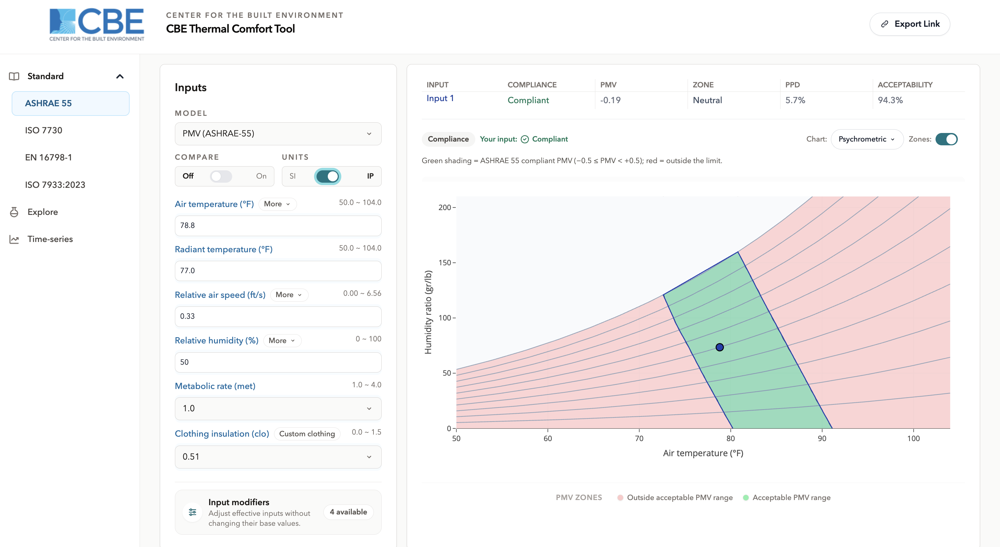

Units (SI / IP)
Overview
The tool works in two unit systems: SI, used by most of the world and by the standards themselves, and IP (Inch-Pound), used in the United States. The toggle sits in the input panel beside the Compare switch and applies to the whole workspace inputs, results, chart axes and exported images alike.

How the conversion works
Values are held internally in SI at all times. IP is a display layer: when you switch systems the stored number does not change, only the way it is shown and the way your typing is interpreted. This matters in practice switching back and forth does not accumulate rounding error, and a value entered in IP is stored as the exact SI equivalent rather than as a rounded conversion.
A share link carries the unit system as part of the calculation, so a recipient sees the same numbers in the same units you did.
What the toggle changes
| Quantity | SI | IP |
|---|---|---|
| Temperature | °C | °F |
| Temperature difference | °C | °F |
| Air speed | m/s | ft/s |
| Humidity ratio | g/kg | gr/lb |
| Relative humidity | % | % |
| Vapour pressure | kPa | inHg |
| Radiation and heat flux | W/m² | Btu/(h·ft²) |
| Body mass | kg | lb |
| Height | m | ft |
| Angles | ° | ° |
What the toggle does not change
Three things stay the same in both systems:
- Metabolic rate is always in met, and clothing insulation always in clo. Both are defined as dimensionless ratios in the standards, so there is no imperial equivalent to convert to.
- PMV, PPD and the index values UTCI, Heat Index, Humidex are index numbers, not physical measurements. Note that Heat Index and Humidex values are conventionally quoted in the temperature unit of the system in use, so they do follow the toggle.
- Durations are reported in hours in both systems.
Applicability limits follow the units
Each model's accepted input range is defined in SI by the standard, and the field shows it converted into whichever system you are using. So a limit of 50 °C appears as 122 °F on the same field in IP the boundary has not moved, only its expression.
Precision and display
Displayed values are rounded for readability, not for storage. The underlying SI value keeps its full precision, which is what the calculation and the chart use. Two inputs that display identically after rounding can therefore produce slightly different results the displayed number is a view of the value, not the value itself.
Where to go next
- Main interface where the toggle sits and what surrounds it.
- Sharing a calculation the unit system travels with the link.